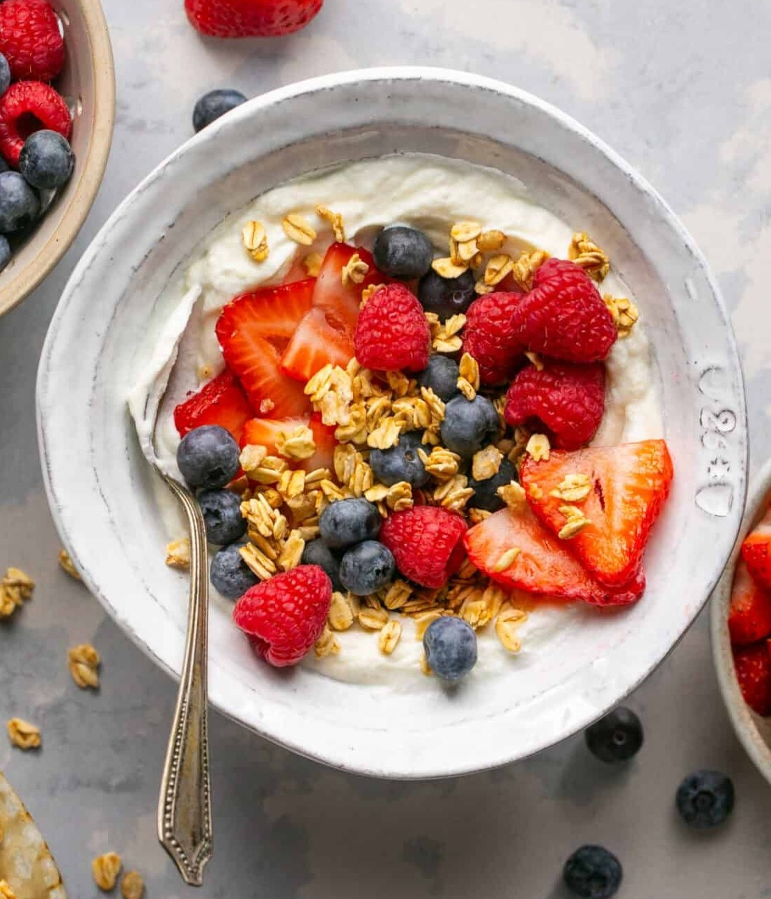

Greek Yogurt Protein Bowl

The "Quick & Healthy" Option
Prep Time: 5 mins | Servings: 1 | Dietary: Vegetarian, Gluten-Free
Ingredients:
- 1 cup plain Greek yogurt (full fat or 2% for creaminess)
- 1/4 cup crunchy granola
- 1/2 cup fresh blueberries or sliced strawberries
- 1 tsp chia seeds
- 1 tbsp honey or maple syrup
Step by Step:
- Scoop the yogurt into a bowl.
- Sprinkled the crumbled granola, chia seeds and berries ontop of the yogurt.
- Finish with a swirl of honey or maple syrup